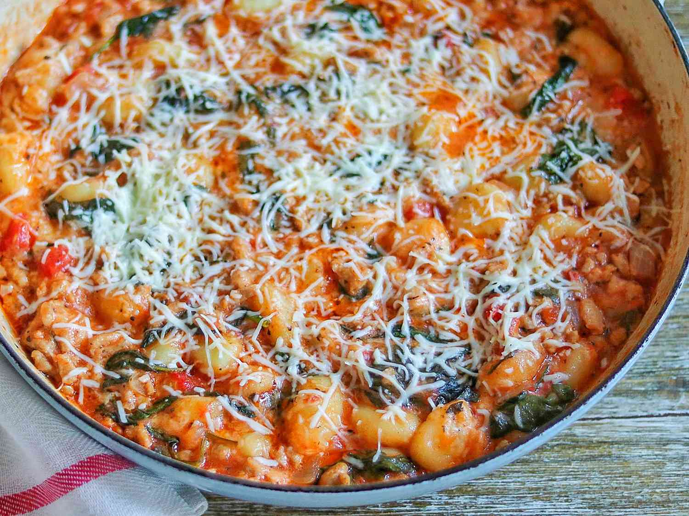

Italian Sausage and Gnocchi Skillet

Sausage Gnocchi is one of my favourite meals.
Ingredients
- 1 tablespoon avocado oil
- ½ cup finely diced onion
- 2 large cloves garlic, finely diced
- 1 pound mild Italian pork sausage, casing removed
- 1 (16 ounce) package dry mini potato gnocchi
- 2 ½ cups no-salt-added diced tomatoes, undrained
- ½ teaspoon salt
- ½ teaspoon dried basil
- ½ teaspoon ground oregano
- ¼ teaspoon ground black pepper
- 5 ounces baby spinach
- 1 pinch freshly grated nutmeg
- 1 cup shredded fresh mozzarella cheese
- ½ cup freshly shredded Parmesan cheese
Steps
- Heat avocado oil in a large, nonstick skillet over medium-high heat. Add onion and cook until softened, 3 to 4 minutes. Add garlic and cook just until fragrant, about 30 seconds. Add sausage; stir to break up the meat and cook until well browned, 5 to 7 minutes.
- Drain excess oil and keep meat mixture in the skillet. Add gnocchi, stirring to break up any clumps. Stir in tomatoes, salt, basil, oregano, and pepper. Cover and simmer for 5 minutes.
- Stir in spinach and nutmeg and simmer until spinach has wilted, 3 to 5 minutes. Sprinkle mozzarella and Parmesan cheeses on top, cover, and simmer until cheese has melted, 2 to 3 minutes. Serve immediately.
Back to Index